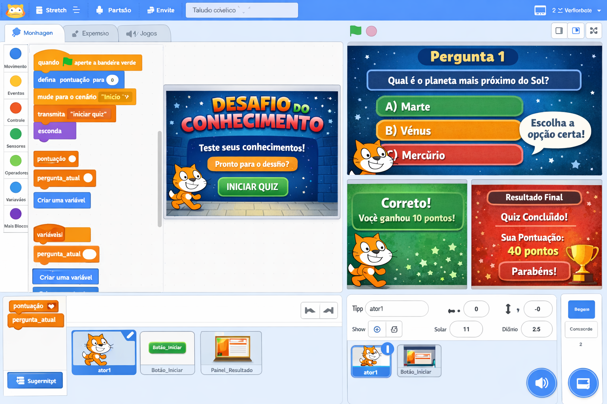
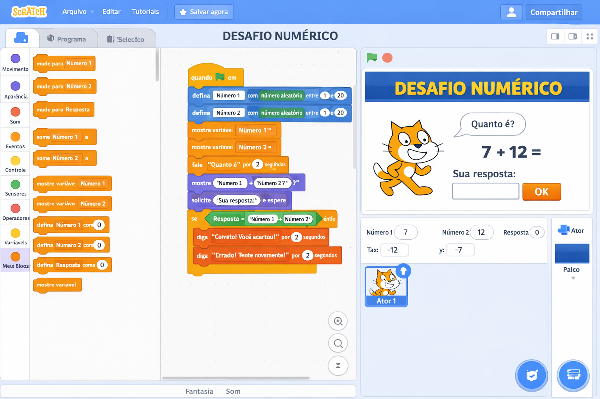
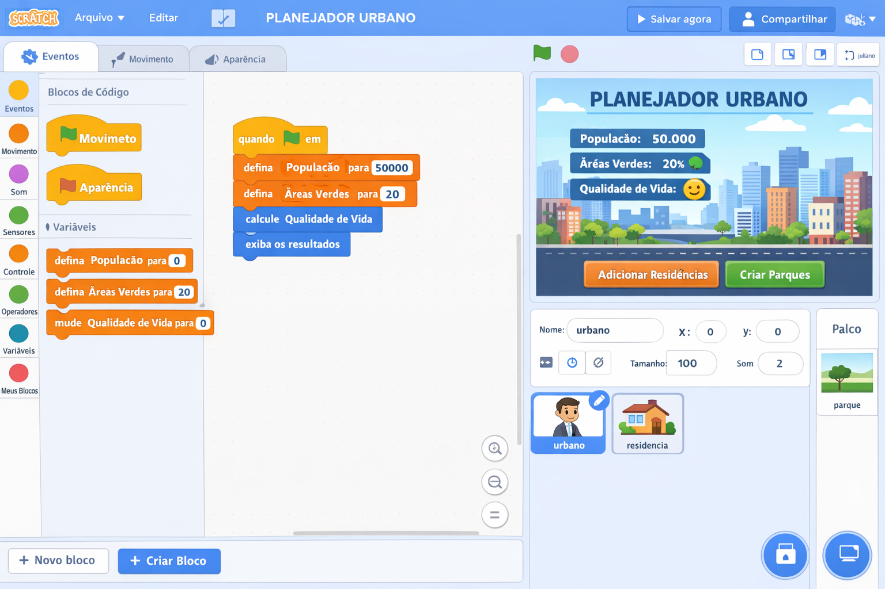
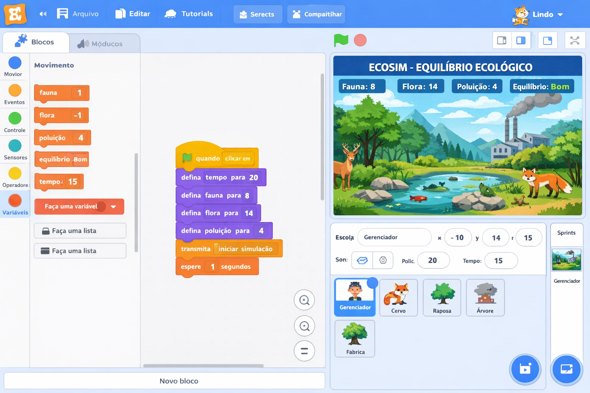

Projetos Didáticos - 7º Ano
Quiz Educativo, Desafios Matemáticos, Simulações Geográficas e Ecológicas
📝 PROJETO 7º ANO: "DESAFIO DO CONHECIMENTO"
Descrição do Projeto
Os alunos criarão um quiz interativo sobre um tema de sua escolha (matemática, ciências, história, cultura pop, etc.). O projeto deve conter pelo menos 5 perguntas, com feedback imediato (acerto/erro), pontuação acumulada e uma tela final com o resultado. O foco é no uso de variáveis, condicionais, operadores de comparação e transmissões para organizar o fluxo das perguntas.

Objetivos de Aprendizagem
- Cognitivos: Reforçar conteúdos de outras disciplinas, compreender o conceito de variável, aplicar operadores de comparação.
- Técnicos: Criar e manipular variáveis (
pontuação,pergunta_atual), usar blocosse-entãoesenão, utilizar blocos de perguntas (pergunte e espere) e transmissões (transmita). - Socioemocionais: Desenvolver a capacidade de formular perguntas claras, dar feedback construtivo e trabalhar em equipe para construir o banco de questões.
📚 Alinhamento com a BNCC e DCE-PR
- EF07MA06 – Resolver problemas envolvendo operações com números inteiros (pode ser aplicado nas perguntas).
- EF07CI01 – Elaborar questionamentos sobre a realidade (criação de perguntas).
- EF69LP47 – Analisar e construir textos com escolhas que levem o leitor a diferentes caminhos (feedback e pontuação).
- Competência Geral 5 – Cultura Digital: usar tecnologias para criar conhecimento.
Passo a Passo do Projeto
Fase 1: Planejamento do Quiz (1 aula de 50 min)
Atividade: Em duplas, os alunos devem escolher um tema e elaborar um conjunto de 5 perguntas, cada uma com 3 opções de resposta (apenas uma correta). Eles também devem definir o sistema de pontuação (ex.: 10 pontos por acerto, 0 por erro) e o feedback para cada resposta.
📋 Modelo de Banco de Perguntas
Tema: Sistema Solar
- Pergunta: Qual é o planeta mais próximo do Sol?
A) Vênus B) Mercúrio C) Marte
Resposta correta: B - Pergunta: Quantos planetas existem no Sistema Solar?
A) 8 B) 9 C) 7
Resposta correta: A
Fase 2: Implementação no Scratch (2 aulas)
Preparação: Criar as variáveis pontuação e
pergunta_atual. Adicionar sprites (um personagem que fará as perguntas) e cenários
(pode ser um único cenário com fundo temático).
Código de Inicialização:
Estrutura de uma Pergunta:
Controlador de Perguntas: Repetir o padrão para as 5 perguntas, alterando o texto e a resposta correta.
Tela Final:
Fase 3: Teste e Refinamento (1 aula)
Os alunos devem testar seus quizzes com colegas, corrigir eventuais erros de lógica (ex.: resposta que não é reconhecida) e ajustar os tempos de espera. O professor pode promover um "campeonato de quizzes", onde os alunos jogam os projetos uns dos outros.
Rubrica de Avaliação
- ✅ Conteúdo (2 pontos): Perguntas adequadas ao tema, sem erros factuais.
- ✅ Funcionalidade (3 pontos): Quiz executa todas as perguntas, calcula pontuação corretamente e mostra feedback adequado.
- ✅ Código (3 pontos): Uso adequado de variáveis, condicionais e transmissões; código organizado.
- ✅ Interface (2 pontos): Instruções claras, feedback visual, sons ou efeitos que tornem o quiz atraente.
Extensões e Desafios
- Adicionar temporizador: Incluir uma variável
tempoque diminui a cada segundo e encerra o quiz se o tempo acabar. - Sistema de vidas: Em vez de pontuação, usar vidas que diminuem com respostas erradas.
- Perguntas aleatórias: Usar uma lista para armazenar perguntas e sortear a ordem.
- Diferentes níveis de dificuldade: Criar um seletor no início (fácil, médio, difícil) que altera a pontuação ou o tempo.
- Integração com outra disciplina: Criar um quiz sobre um conteúdo que estão estudando em Ciências ou Geografia.
🧮 PROJETO 7º ANO: "DESAFIO NUMÉRICO"
Descrição do Projeto
Os alunos desenvolverão um jogo interativo de desafios matemáticos, onde o jogador deve resolver problemas que envolvem números inteiros, frações, equações simples e raciocínio lógico. O jogo apresentará cinco problemas com dificuldade crescente, feedback imediato, pontuação acumulada e uma tela de resultados. O projeto explora variáveis, condicionais, operadores aritméticos e transmissões para controlar o fluxo dos problemas.

Objetivos de Aprendizagem
- Cognitivos: Reforçar conceitos matemáticos (operações com inteiros, frações, resolução de equações), desenvolver raciocínio abstrato e sistemático para solucionar problemas.
- Técnicos: Utilizar variáveis para armazenar pontuação e controle de etapas, empregar condicionais aninhadas para verificar respostas, usar operadores de comparação e aritméticos.
- Socioemocionais: Incentivar a persistência diante de desafios, promover trabalho colaborativo na criação dos problemas e na validação das soluções.
📚 Alinhamento com a BNCC e DCE-PR
- EF07MA01 – Resolver problemas envolvendo operações com números inteiros.
- EF07MA02 – Utilizar a adição e a subtração de números inteiros para resolver situações‑problema.
- EF07MA03 – Resolver problemas que envolvam frações e suas operações.
- EF07MA18 – Resolver equações do 1º grau com uma incógnita.
- Competência Geral 5 – Cultura Digital: criar soluções computacionais para problemas reais.
Passo a Passo do Projeto
Fase 1: Planejamento dos Desafios (1 aula)
Em duplas, os alunos devem criar cinco problemas matemáticos com diferentes níveis de dificuldade. Cada problema deve ter um enunciado claro, um campo para resposta numérica e a resposta correta. Exemplos:
📋 Modelo de Banco de Problemas
Problema 1 (Fácil): Calcule: (-3) × (+5) = ?
Resposta correta: -15
Problema 2 (Médio): Resolva a equação: 2x + 5 = 15. Qual o valor de x?
Resposta correta: 5
Problema 3 (Difícil): João tinha 2/3 de uma pizza e comeu 1/4 do que tinha.
Que fração da pizza ele comeu?
Resposta correta: 1/6 (ou 0,1666...)
Fase 2: Implementação no Scratch (2 aulas)
Preparação: Criar as variáveis pontuação,
problema_atual. Adicionar um sprite "Professor" que apresenta os problemas e um
cenário de sala de aula.
Código de Inicialização:
Estrutura de um Problema:
Controle de Fluxo: Repetir a estrutura para os cinco problemas. No último, após
a verificação, transmitir [fim_jogo].
Tela Final:
Fase 3: Teste e Refinamento (1 aula)
Os alunos devem testar o jogo com colegas, identificar se as respostas são reconhecidas corretamente (especialmente frações) e ajustar os feedbacks. O professor pode organizar uma competição amigável para ver quem obtém a maior pontuação.
Rubrica de Avaliação
- ✅ Conteúdo Matemático (2 pontos): Problemas bem formulados, sem erros conceituais.
- ✅ Funcionalidade (3 pontos): Jogo executa todos os problemas, calcula a pontuação corretamente e fornece feedback adequado.
- ✅ Código (3 pontos): Uso correto de variáveis, condicionais, operadores aritméticos e transmissões; código limpo.
- ✅ Interface (2 pontos): Instruções claras, personagem interativo, elementos visuais que facilitam a compreensão.
Extensões e Desafios
- Níveis de dificuldade: Criar um seletor no início (fácil, médio, difícil) que altera o valor da pontuação ou a complexidade dos problemas.
- Gerador de problemas: Utilizar listas e números aleatórios para criar problemas diferentes a cada partida.
- Sistema de dicas: Adicionar um botão que, ao ser pressionado, mostra uma dica para o problema atual (reduz a pontuação).
- Integração com outras disciplinas: Adaptar o formato para problemas de Física (velocidade, distância) ou Química (balanceamento).
🌎 PROJETO 7º ANO: "PLANEJADOR URBANO"
Descrição do Projeto
Os alunos criarão um simulador interativo que permite ao jogador planejar uma cidade, gerenciando variáveis como população, área verde, infraestrutura e qualidade de vida. O jogador toma decisões que afetam os indicadores, e o simulador fornece feedback sobre as consequências. O projeto trabalha variáveis globais, condicionais complexas, operadores lógicos e eventos para modelar um sistema de planejamento urbano.

Objetivos de Aprendizagem
- Cognitivos: Compreender conceitos geográficos como urbanização, sustentabilidade, distribuição de recursos; desenvolver raciocínio sistêmico e tomada de decisão baseada em dados.
- Técnicos: Manipular múltiplas variáveis, usar condicionais para avaliar combinações de variáveis, criar interações com botões e sprites, implementar lógica de simulação.
- Socioemocionais: Refletir sobre impactos das decisões humanas no meio ambiente e na sociedade, trabalhar em equipe para calibrar o modelo de simulação.
📚 Alinhamento com a BNCC e DCE-PR
- EF07GE01 – Analisar a formação territorial do Brasil e suas transformações.
- EF07GE06 – Discutir os processos de urbanização e suas consequências.
- EF07GE10 – Identificar e analisar problemas ambientais urbanos e suas soluções.
- Competência Geral 5 – Cultura Digital: utilizar tecnologias para simular fenômenos.
Passo a Passo do Projeto
Fase 1: Planejamento do Simulador (1 aula)
Em grupos, os alunos definem os indicadores que serão monitorados: população,
área_verde, infraestrutura, qualidade_vida (calculada a
partir dos outros). Eles também criam cenários de decisão (ex.: construir um parque, construir
um shopping, aumentar a coleta de lixo) e definem os impactos de cada escolha sobre as
variáveis.
📋 Exemplo de Decisões e Impactos
- Construir Parque: +10 área_verde, -5 infraestrutura, +5 qualidade_vida
- Construir Shopping: +15 infraestrutura, -5 área_verde, +3 população
- Investir em Saneamento: +20 qualidade_vida, -10 orçamento (se implementado)
Fase 2: Implementação no Scratch (2 aulas)
Preparação: Criar variáveis para cada indicador e um sprite "Prefeito" que apresenta as opções. Criar botões para cada ação (usando sprites com blocos de clique).
Código de Inicialização:
Lógica de uma Decisão (ex.: botão "Construir Parque"):
Atualização da Tela: Um sprite exibe os valores das variáveis e um feedback sobre a situação da cidade (ex.: "Cidade sustentável", "Alerta de poluição").
Fase 3: Teste e Refinamento (1 aula)
Os alunos testam diferentes sequências de decisões, verificam se os impactos são coerentes e ajustam a fórmula de cálculo da qualidade de vida. Podem também adicionar um botão de "Relatório" que mostra um histórico das decisões.
Rubrica de Avaliação
- ✅ Modelagem (2 pontos): As variáveis e seus relacionamentos são realistas e bem definidos.
- ✅ Funcionalidade (3 pontos): As decisões alteram corretamente os indicadores; o feedback é claro e consistente.
- ✅ Código (3 pontos): Uso adequado de variáveis, condicionais aninhadas, operadores lógicos e transmissões.
- ✅ Interface (2 pontos): Botões intuitivos, cenário que reflete o estado da cidade, instruções claras.
Extensões e Desafios
- Eventos aleatórios: Criar um sistema que, a cada 10 cliques, gera um evento (enchente, descoberta de área verde) que altera os indicadores.
- Objetivos múltiplos: O jogador deve atingir metas (ex.: área_verde > 80 e qualidade_vida > 70) dentro de um número limitado de ações.
- Gráficos simples: Usar sprites para representar barras de progresso que se alongam conforme os valores aumentam.
- Comparação com dados reais: Pesquisar indicadores de uma cidade real e tentar aproximar o simulador dessa realidade.
🌿 PROJETO 7º ANO: "ECOSIM - EQUILÍBRIO ECOLÓGICO"
Descrição do Projeto
Os alunos desenvolverão um simulador de ecossistema onde o jogador pode alterar populações de espécies (plantas, herbívoros, predadores) e observar o equilíbrio dinâmico. O sistema utiliza equações simplificadas de predação e crescimento populacional, exigindo que o jogador encontre um ponto de equilíbrio sustentável. O projeto explora variáveis, operadores aritméticos, condicionais, listas (para histórico) e laços de repetição para simular a passagem do tempo.

Objetivos de Aprendizagem
- Cognitivos: Compreender conceitos de ecologia (cadeia alimentar, capacidade de suporte, equilíbrio), aplicar raciocínio sistêmico e resolver problemas de otimização.
- Técnicos: Utilizar laços de repetição (
repita até) para simular ciclos, criar listas para armazenar histórico de populações, empregar fórmulas matemáticas para modelar crescimento e predação. - Socioemocionais: Desenvolver senso de responsabilidade ambiental, colaborar na calibração do modelo e na análise dos resultados.
📚 Alinhamento com a BNCC e DCE-PR
- EF07CI07 – Analisar as relações entre os seres vivos e os fatores abióticos em ecossistemas.
- EF07CI08 – Simular e avaliar o impacto de intervenções humanas em um ecossistema.
- EF07CI09 – Propor soluções para problemas ambientais considerando a sustentabilidade.
- Competência Geral 5 – Cultura Digital: criar simulações para compreender fenômenos naturais.
Passo a Passo do Projeto
Fase 1: Planejamento do Modelo Ecológico (1 aula)
Os alunos escolhem um ecossistema (ex.: floresta, savana) e definem três espécies: produtores (plantas), herbívoros e predadores. Estabelecem equações simples para a dinâmica:
Herbívoros: herbívoros = herbívoros + (taxa_nascimento * herbívoros) - (predação * predadores) - (mortalidade * herbívoros)
Predadores: predadores = predadores + (taxa_reprodução * predadores) - (mortalidade_pred * predadores)
Os alunos definem os valores iniciais e as taxas, e criam um plano de interface com botões para ajustar as taxas e um botão "Simular" que executa um ciclo.
Fase 2: Implementação no Scratch (2 aulas)
Preparação: Criar variáveis para as três populações e para as taxas. Criar um sprite "Cientista" que explica o simulador e botões de controle.
Código de Inicialização:
Lógica de Simulação (um ciclo):
Botão "Simular 10 ciclos": Repete o bloco de receber [ciclo] 10 vezes.
Fase 3: Teste e Refinamento (1 aula)
Os alunos executam simulações variando as taxas e observam se ocorre extinção ou explosão populacional. Ajustam os valores para que o sistema tenha um comportamento realista. Criar um gráfico simples com sprites ou um relatório final.
Rubrica de Avaliação
- ✅ Modelagem Ecológica (2 pontos): As relações entre as espécies são coerentes e as equações representam adequadamente o equilíbrio.
- ✅ Funcionalidade (3 pontos): A simulação calcula corretamente as novas populações, não permite valores negativos e o histórico é registrado.
- ✅ Código (3 pontos): Uso de variáveis, operadores aritméticos, listas, laços de repetição e condicionais de forma organizada.
- ✅ Interface (2 pontos): Controles intuitivos, exibição clara dos valores e do histórico, feedback visual sobre o estado do ecossistema.
Extensões e Desafios
- Gráficos dinâmicos: Usar sprites para desenhar gráficos de linhas com base nas listas históricas.
- Intervenção humana: Adicionar botões para "Desmatar", "Introduzir espécie invasora" e ver os efeitos.
- Relatório científico: O programa gera um resumo com recomendações para manter o equilíbrio.
- Comparação com dados reais: Pesquisar um ecossistema ameaçado e ajustar os parâmetros para simular cenários reais.
Outras Ideias de Projetos para o 7º Ano
Material de Apoio para o Professor
📌 Dicas para a Atividade
- Revisão de variáveis: Antes de iniciar, faça uma atividade rápida com cartões físicos simulando variáveis.
- Banco de perguntas compartilhado: Crie um documento colaborativo onde cada dupla registra suas perguntas; assim, os alunos podem se inspirar ou trocar ideias.
- Encoraje a correção entre pares: Após o teste, peça que os alunos escrevam sugestões para os colegas.
📚 Conexões Curriculares
- Matemática: Uso de operações, comparações e lógica booleana.
- Ciências: Elaboração de perguntas sobre conteúdos estudados.
- Língua Portuguesa: Clareza na formulação das perguntas e feedback.